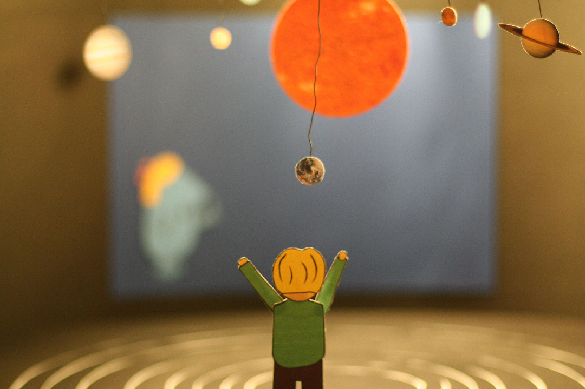

Technologien, mit denen Körper und Bewegungen erfasst werden können, bieten neue Interaktionsmöglichkeiten zwischen Mensch und Maschine und einen freien Umgang mit der digitalen Umgebung. In Projektwochen zum Thema "Body in Motion" entstand dieses Konzept, um Kindern interaktiv im freien Raum Informationen zu vermitteln.
Microsofts Sensorleiste „Kinect“ gab den Anlass, sich mit neuen, berührungslosen Interaktionen zu beschäftigen. Ziel war es, Kindern, die bereits zu viel Zeit mit Konsolen, vorm Computer oder Fernseher verbringen, den Anreiz zu geben, sich wieder mit ihren Sinnen bzw. analog zu beschäftigen.
Das Ergebnis wurde als Videoprototyp dargestellt. Aus viel Pappe, Draht und Klebstoff entstand dieser Stop-Motion-Film:
Recherchen ergaben, dass das Gehirn durch Erfahrungen, die durch den Austausch mit der Außenwelt zustande kommen, lernt. Kinder erlernen über einen längeren Zeitraum (bis zu 8 Jahre), wie ihre Sinne funktionieren. Analoge Erfahungen sind dafür wichtig.
Das wissenschaftliche Mitmachmuseum „Extavium“ in Potsdam bietet eine gute Möglichkeit, spielerisch Wissenschaft näher zu bringen. Im Vordergrund steht dabei nicht das Lernen, sondern das Ausprobieren.
{kind=link}
{kind=link}
{kind=link}
In dem Museum gibt es eine kleine Ecke mit Computern, auf denen unter anderem das Sonnensystem erklärt wird. Beobachtungen, die später in Interviews mit den Betreuern bestätigt wurden, zeigten, dass sich die Kinder beinahe überhaupt nicht für diese digitalen Exponate interessierten, sondern sich lieber „instinktiv“ mit den analogen Dingen beschäftigten.
Die Überlegung war, das Thema „Sonnensystem“ in einem analogen Exponat darzustellen.
Die Planeten hängen auf ihren Bahnen in der Höhe und kommen herunter, wenn ein Kind nach ihnen greift. Eine Erzählerfigur spricht hierbei das Kind explizit an, erklärt wie das Exponat funktioniert und erläutert die Informationen zum Sonnensystem. Sobald ein oder mehrere Planeten abgenommen wurden, sind weitere Szenarien vorstellbar.
Der entsandene Videoprototyp visualisiert zwei Szenarien: Einmal, das Erläutern der einzelnen Planten und zum anderen, eine Art Spiel mit den Entfernungen der einzelnen Planeten zueinander. An einer Projektionswand werden genauere Zusammenhänge visualisiert.
{kind=link}
{kind=link}
{kind=link}
{kind=link}
{kind=link}
{kind=link}